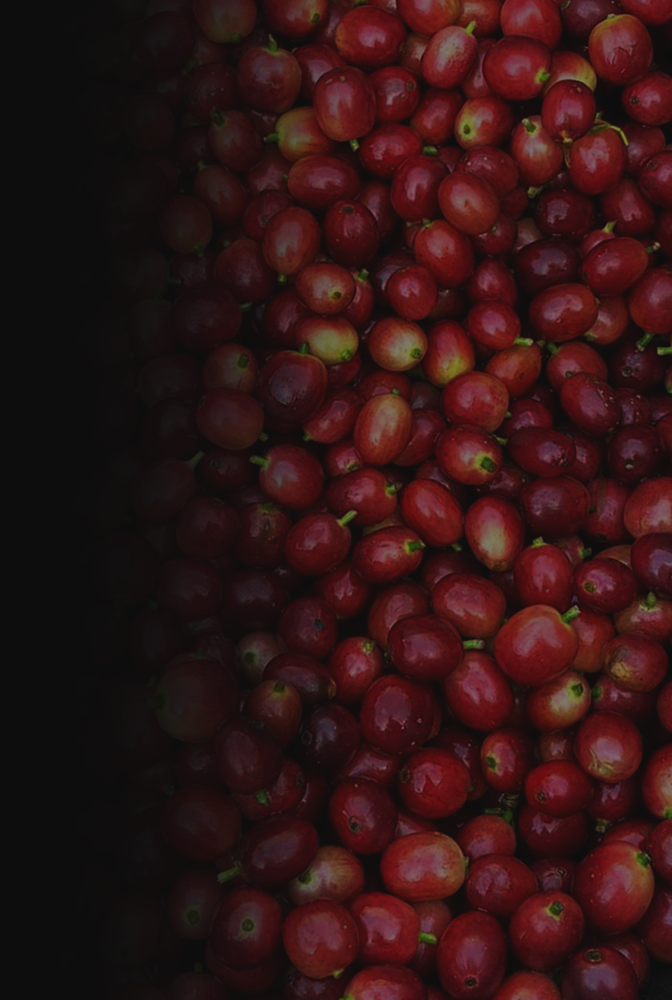
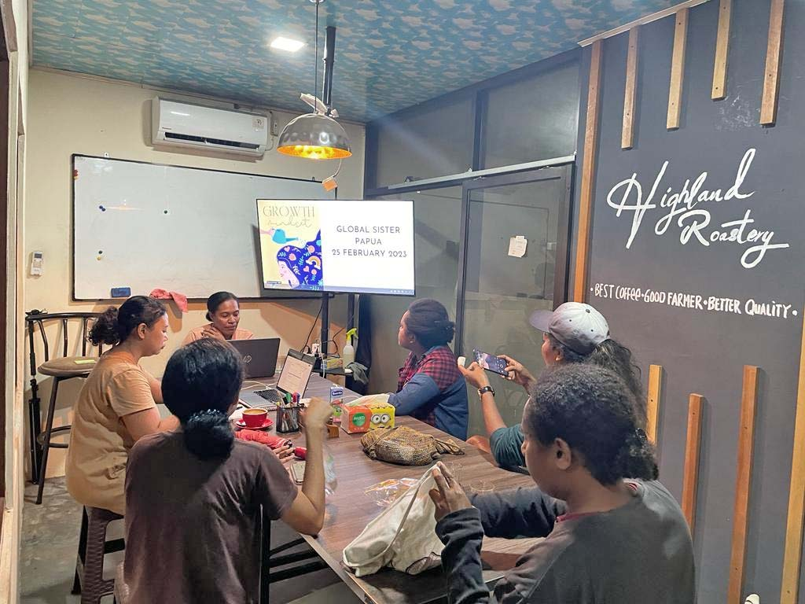
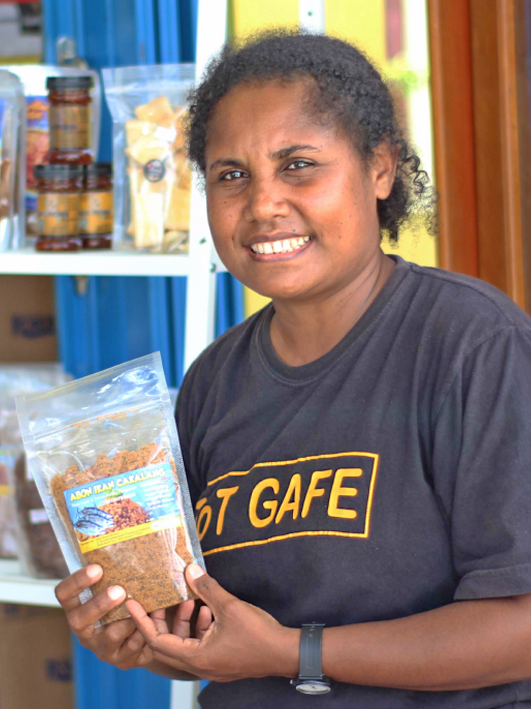
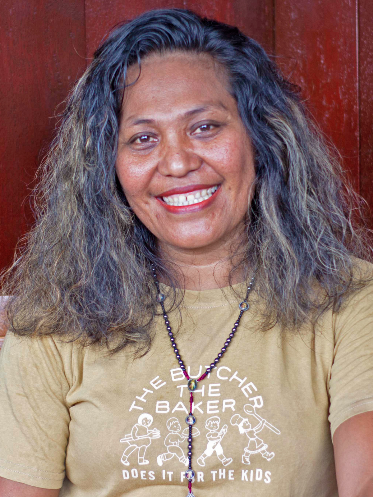
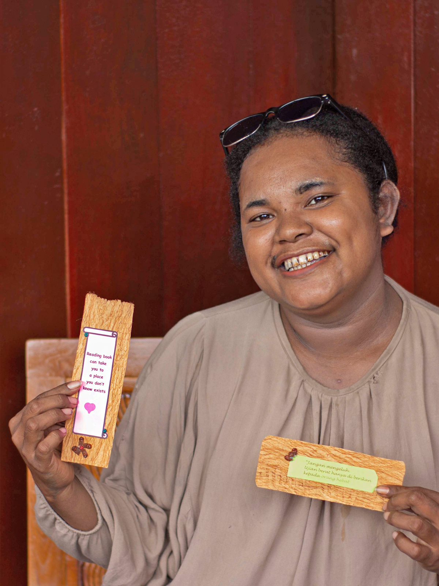
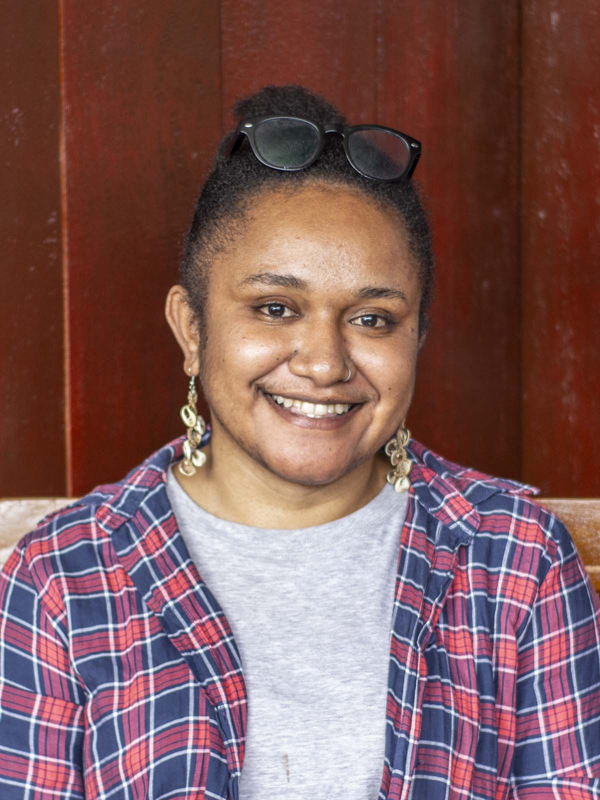
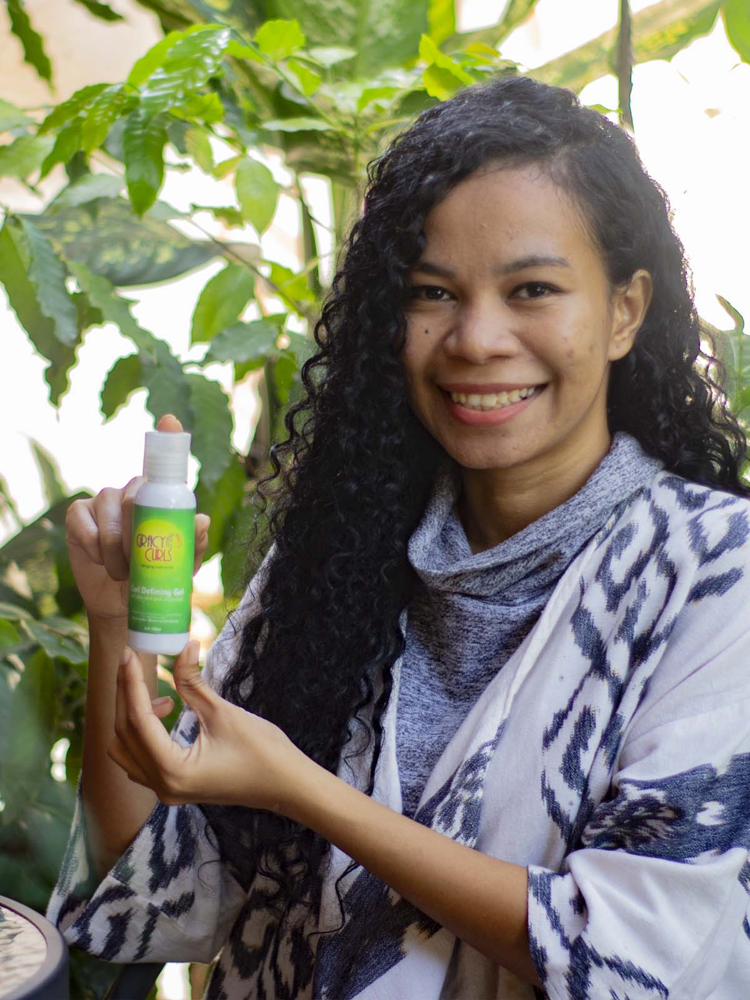

Cafenod

Global Sisters Program
Program ini bertujuan untuk membangun kemampuan dan ketahanan ekonomi di kalangan pengusaha perempuan ASEAN khususnya di Filipina dan Indonesia. Program ini juga merupakan peluang untuk menghubungkan pengusaha perempuan ASEAN ke Australia. Program dimulai pada Juni 2022 dan akan berlangsung hingga Mei 2023 dan semua partisipasi akan dilakukan secara virtual.
Para Perempuan Papua yang dipimpin oleh Lucia Runggeari, yang dibantu oleh para Global Sistes, telah melakukan sesi pendidikan peer-to-peer. Tujuan dari sesi-sesi ini, sebagaimana dinyatakan oleh Global Sisters: bertujuan untuk memungkinkan bisnis dan menciptakan keamanan ekonomi jangka panjang bagi perempuan di Indonesia dan Filipina.
Peserta Better Together Papuan Sister adalah lima wanita pengusaha di Papua yang memiliki latar belakang berbeda dalam menjalankan usahanya. Mereka adalah Elke yang memimpin BUMKAM Hentachi Holtekamp dan Ia bekerja untuk memberdayakan masyarakat lokal di Holtekamp Jayapura. Saat ini, Nani adalah direktur Yayasan Noken yang memiliki passion dalam mengembangkan peternakan babi miliknya. Apalagi di program ini ada Elsa, dia adalah staf di Yayasan Noken yang menjalankan bisnis aksesoris wanita. Naomi adalah seorang jurnalis salah satu International News dan memiliki hobi membuat aksesoris wanita seperti anting dan kalung. Dari hobinya tersebut ia mencoba menjual kepada beberapa temannya dan kini menjadi usahanya bernama koleksi Lerovi’os. Peserta terakhir adalah Grace Sumihe, pemilik Gracycurls. Sebagai pengajar di Sekolah Papua Kasih, ia sangat antusias untuk mengajari siswa Papua tentang bisnis. Masalah pertamanya dengan rambut membawa ide baru untuk mengembangkan produk alami.

Kegiatan Global Sister Papua di Ruang Kelas Highland Roastery (Peer to Peer Discussion).
Peserta & Produk
Para Perempuan Papua Yang Mengikuti Program
Perserta program terdiri dari Para Perempuan Papua yang memiliki semangat yang tinggi dalam menjalakan usaha yang bergerak dibidang makan, perternakan, aksesoris hingga produk kecantikan.


ELKE ELISABETH BOYAR
InstagramUsaha ini berdiri karena adanya kesadaran masyarakat mengenai pentingnya membangun sebuah wadah perekonomian yang ada di kampung Holtekamp. Dalam upaya untuk mendorong pemberdayaan perempuan di kampung, usaha ini telah menggagas sebuah unit usaha yg bernama Noken-Bumkam yg berfungsi untuk menampung, mengemas serta memasarkan produk " olahan dari kelompok perempuan di kampung. Latar belakang berdirinya usaha ini adalah adanya sebuah kondisi di kalangan perempuan yang mampu memproduksi sebuah produk namun mereka tidak mampu mengemas dan menjual produk mereka ke Tangan konsumen secara berkelanjutan.
Noken Bumkam memiliki 2 produk unggulan yaitu kue kering Nastar yg memiliki 2 varian yaitu Nastar jumbo yg terbuat dari tepung terigu dan Nastar Sagu yg terbuat dari tepung sagu, dan produk yang kedua adalah Abon ikan Tuna.
Selain 2 produk unggulan Tersebut di atas , ada beberapa produk olahan lainnya. Sejak usaha ini mulai berjalan dari tahun 2021 sampai saat ini telah memiliki 10 jenis produk dan telah mendukung kurang lebih 10 org perempuan yg ada di kampung.


Nani Uji Pundu
Usaha penjualan babi ini saya beri nama Tanta Bebong, usaha ini telah dirintis selama 3 tahun atau sejak tahun 2020 dengan modal nekad dan ketekunan. Awalnya hanya melihat bagaimana orang disekitar memelihara babi dan menjualnya, kemudian saya tertarik sehingga mengembangkan peternakan babi ini, bukan saja sekedar menjual tetapi juga memperhatikan faktor faktor yang mempengaruhi perkembangan babi seperti pakan yang diolah dengan benar dan kebersihan kadang
Produk yang dijual adalah anakan babi


Elsa Desi Manggaprouw
InstagramSaya merupakan salah satu staff di Noken Foundation. Saya tertarik dengan penggunaan aksesoris sehingga membuat saya untuk mengembangkan produk aksesoris dan pembalut kain. Saya memulai bisnis sejak tahun 2022 dan masih dikatakan sangat baru sehingga perlu banyak belajar untuk berinovasi dengan produk-produk saya
Produk dari Mace Papua ini meliputi aksesoris anting- anting dan juga pembatas buku yang terbuat dari kulit kayu. Selain itu terdapat produk pembalut kain yang di desain menggunakan kain dan bebas bahan kimia


Naomy Lerovia Wenda
Usaha Aksesoris atau Lerovi’os collection (LC) ini sudah berjalan sejak 2018, awalnya hanya sekedar coba-coba karena sebuah iklan yang muncul di Instagram saya. Lalu saya lihat ada pasarnya di kalangan anak-anak muda Papua apalagi bahan baku yang saya gunakan untuk produk LC ini belum terlalu banyak dipakai juga. Selain itu saya melihat bahwa anak-anak muda sekarang lebih menyukai produk-produk yang memperlihatkan etnik Papua, saya rasa itu juga salah satu nilai tambah untuk produk LC ini.
Selain bahan baku yang digunakan ini masih alami, produk LC ini bisa saya katakana limited edition karena dalam pembuatannya produk anting dari LC ini tidak dibuat dalam jumlah banyak. Saya terus berinovasi dalam proses pembuatan anting dan kalung.
Saat ini LC masih dijalankan oleh saya sendiri. Rencana jangka pendek yaitu /hari bisa hasilkan minimal 5 produk anting, sedangkan rencana jangka Panjang saya yaitu bisa punya online shop yang tidak hanya dijual di Jayapura, tetapi bisa juga dikirim keluar Papua.


Grace Sumihe
InstagramLatar belakang berdirinya Gracy Curls dimulai dari permasalahan akan susahnya mendapatkan produk lokal khusus rambut keriting dan minimnya pengetahuan masyarakat akan perawatan rambut keriting. Oleh sebab itu, Gracy Curls berupaya memberikan akses yang mudah dalam mendapatkan produk rambut keriting tetapi sekaligus mengedukasi masyarakat tentang perawatan rambut keriting yang efektif
Penjelasan singkat produk : Gracy curls merupakan suatu usaha yang bergerak di bidang kecantikan khususnya produk perawatan rambut keriting. Gracy Curls telah berdiri sejak Mei 2018 dan terus berkembang dalam menciptakan produk-produk perawatan rambut keriting yang natural. HIngga Maret 2023, Gracy Curls memiliki 4 produk rambut keriting homemade yaitu Curl Defining Gel, Curly Hair Rinse, Curly Hair Mask dan Natural Hair Oil. Gracy Curls juga menyediakan produk penunjang lainnya untuk perawatan rambut keriting, seperti curly hair diffuser, microfiber towel, bonnet, dll